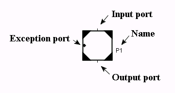
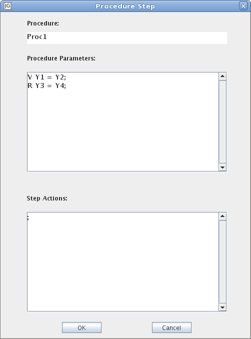

A procedure step represents a call to a procedure. The exception output port behaves in the same way as the exception output port of a macro step. However, it is not possible to resume the execution of a procedure. The transition connected to the output port is enabled when the exit step of the procedure is active. When this transition fires the exit step is deactivated, the procedure call is terminated, and the procedure step is deactivated.
Opens an editor for the procedure name, call parameters, and the procedure step actions.

Procedure: The procedure name can be written in several ways:
Procedure Parameters: See Call Parameters Syntax for details about call parameters. The expression will be evaluated in the context of the Procedure Step.
Step Actions: Procedure Step actions are entered in the Step Actions field.
Show/Hide Call
Toggle visibility of the procedure call subworkspace.